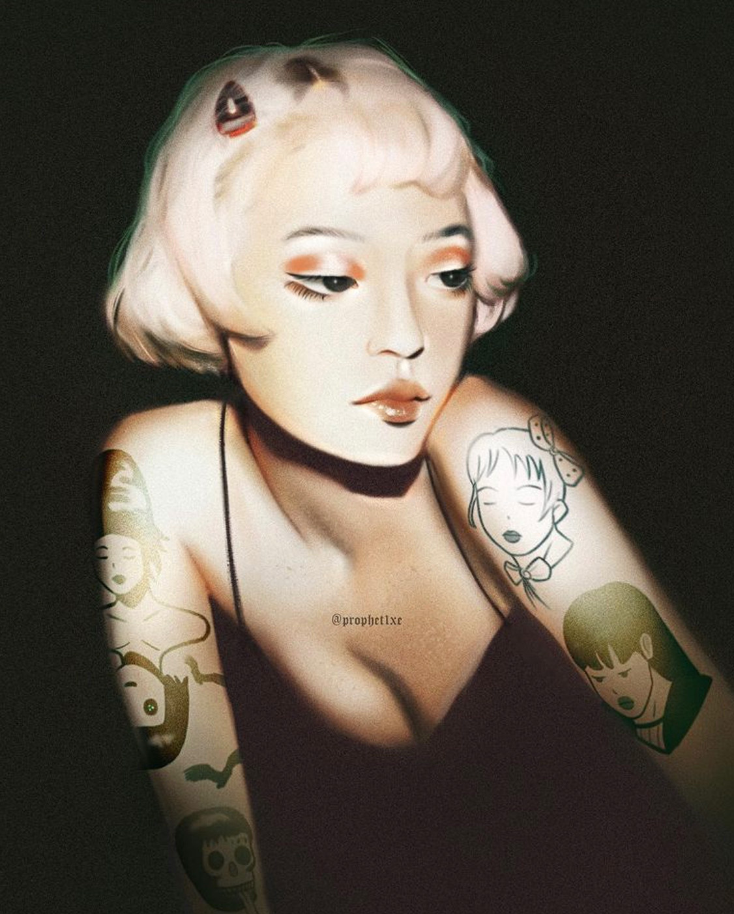
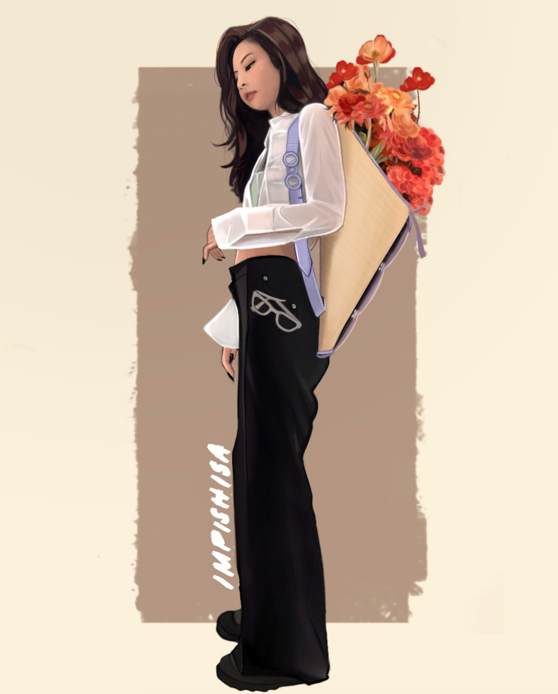
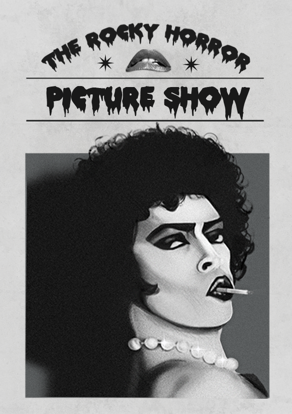
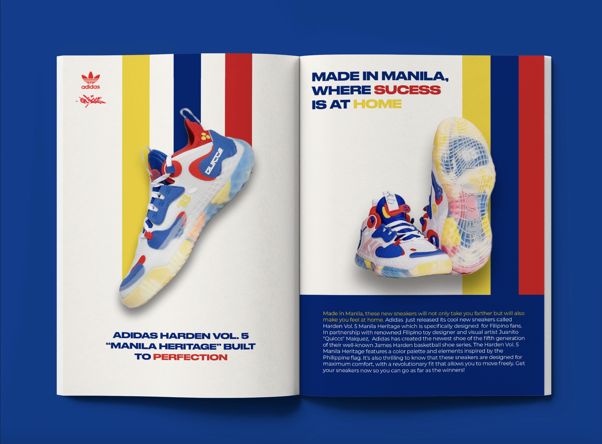

My Skills
I use Adobe Photoshop and Adobe Illustrator. My art style can be described as bold,geometric, and feminine.
My goal is to use art and design to present the rich culture and stories of Mindanao.
I want to help the grassroots network of
Indigenous Peoples, Bangsamoro, and Christian communities achieve their vision for lasting peace and development in Mindanao.
Here some of my works!
Digital Illustrations
|  |  |
Graphic Design
|  |  |